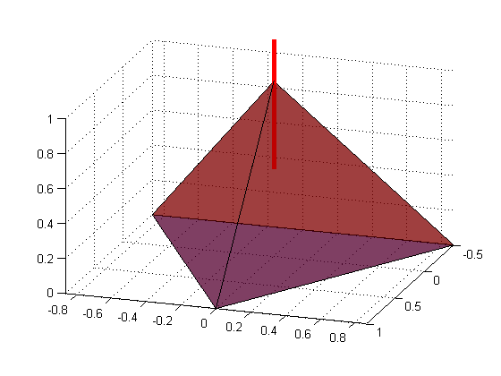

Tutorial and tests of TriangleRayIntersection function
By Jarek Tuszynski (jaroslaw.w.tuszynski@saic.com)
Ray/triangle intersection using the algorithm proposed by Möller and Trumbore (1997), implemented as highly vectorized MATLAB code.
Note : The algorithm is able to solve several types of problems:
- many faces / single ray intersection
- one face / many rays intersection
- one face / one ray intersection
- many faces / many rays intersection
In order to allow that to happen all input arrays are expected in Nx3 format, where N is number of vertices or rays. In most cases number of vertices is different than number of rays, so one of the inputs will have to be cloned to have the right size. Use "repmat(A,size(B,1),1)" function.
Input (all arrays in in Nx3 format, where N is number of vertices or rays):
- orig : ray's origin
- dir : ray's direction
- vert0, vert1, vert2: vertices of the triangle mesh
- options: aditional customization options
- options.triangle - 'one sided' or 'two sided' (default) - how to treat triangles. In 'one sided' version only intersections in single direction are counted and intersections with back facing tringles are ignored
- options.ray - 'ray' (default) or 'segment' - how to treat a ray: as an infinite line (ray) or as line segment defined by a vector
- option.border - controls border handling. If 'normal'(default) border handling is used, the borders points are included, but can easily be lost due to rounding errors. If option.border='inclusive' border points are included, with a margin of option.eps. If option.border='exclusive' borders points are excluded, with margin of option.eps.
- options.epsilon (default = 1e-5) - see option.border for usage
Output:
- Intersect - boolean array of length N
- t - distance from the ray origin to the intersection point in dir
- u,v - barycentric coordinates of the intersection point units
Contents
- Algorithm
- References
- Licence
- Create small surface and perform intersection with a ray (many faces / single ray type problem)
- Create the same surface witch much more elements and perform intersection with a ray
- Triangulate a sphere and display it
- Intersect sphete with a a line segment
- Using option.ray
- Using option.triangle
- Example with many rays and many triangles (many faces / many rays type problem)
- Using option.border to customize border handling
Algorithm
Function solves:
for .
Variables u , v are barycentric coordinates and t/|d| is the distance from the intersection point to the ray origin. Ray and triangle intersect if u>=0, v>=0 and u+v<=1 .
References
Based on
- "Fast, minimum storage ray-triangle intersection". Tomas Möller and Ben Trumbore. Journal of Graphics Tools, 2(1):21--28, 1997. http://www.graphics.cornell.edu/pubs/1997/MT97.pdf
- http://fileadmin.cs.lth.se/cs/Personal/Tomas_Akenine-Moller/raytri/
- http://fileadmin.cs.lth.se/cs/Personal/Tomas_Akenine-Moller/raytri/raytri.c
Licence
The function is distributed under BSD License
format compact; % viewing preference clear variables; close all; type('license.txt')
Copyright (c) 2011, Jaroslaw Tuszynski
All rights reserved.
Redistribution and use in source and binary forms, with or without
modification, are permitted provided that the following conditions are
met:
* Redistributions of source code must retain the above copyright
notice, this list of conditions and the following disclaimer.
* Redistributions in binary form must reproduce the above copyright
notice, this list of conditions and the following disclaimer in
the documentation and/or other materials provided with the distribution
THIS SOFTWARE IS PROVIDED BY THE COPYRIGHT HOLDERS AND CONTRIBUTORS "AS IS"
AND ANY EXPRESS OR IMPLIED WARRANTIES, INCLUDING, BUT NOT LIMITED TO, THE
IMPLIED WARRANTIES OF MERCHANTABILITY AND FITNESS FOR A PARTICULAR PURPOSE
ARE DISCLAIMED. IN NO EVENT SHALL THE COPYRIGHT OWNER OR CONTRIBUTORS BE
LIABLE FOR ANY DIRECT, INDIRECT, INCIDENTAL, SPECIAL, EXEMPLARY, OR
CONSEQUENTIAL DAMAGES (INCLUDING, BUT NOT LIMITED TO, PROCUREMENT OF
SUBSTITUTE GOODS OR SERVICES; LOSS OF USE, DATA, OR PROFITS; OR BUSINESS
INTERRUPTION) HOWEVER CAUSED AND ON ANY THEORY OF LIABILITY, WHETHER IN
CONTRACT, STRICT LIABILITY, OR TORT (INCLUDING NEGLIGENCE OR OTHERWISE)
ARISING IN ANY WAY OUT OF THE USE OF THIS SOFTWARE, EVEN IF ADVISED OF THE
POSSIBILITY OF SUCH DAMAGE.
Create small surface and perform intersection with a ray (many faces / single ray type problem)
n=20; [x,y] = meshgrid(1:n,1:n); % create 2D mesh of points faces = delaunay(x,y); % triangulate it using Delaunay algorithm z = peaks(n); % sample function defined on a grid of the same dimenision vertices = [x(:) y(:) z(:)]; % vertices stored as Nx3 matrix orig = [n/2+5 n 2]; % ray's origin dest = [n/2-5 0 2]; % ray's destination vert1 = vertices(faces(:,1),:); vert2 = vertices(faces(:,2),:); vert3 = vertices(faces(:,3),:); Orig = repmat(orig,size(vert1,1),1); % Clone it until the same size as vert1 Dest = repmat(dest,size(vert1,1),1); % Clone it until the same size as vert1 tic; intersect = TriangleRayIntersection(Orig, Dest-Orig, vert1, vert2, vert3); fprintf('Number of: faces=%i, points=%i, intresections=%i; time=%f sec\n', ... size(faces,1), size(vertices,1), sum(intersect), toc);
Number of: faces=722, points=400, intresections=4; time=0.000901 sec
Display the results: Surface in blue, line in light read and intersected triangles in dark red
figure(1); clf; trisurf(faces,x,y,z, intersect*1.0,'FaceAlpha', 0.9) hold on; line('XData',[orig(1) dest(1)],'YData',[orig(2) dest(2)],'ZData',... [orig(3) dest(3)],'Color','r','LineWidth',3)
Create the same surface witch much more elements and perform intersection with a ray
number of intersections should remain the same
n=500; [x,y] = meshgrid(1:n,1:n); % create 2D mesh of points faces = delaunay(x,y); % triangulate it using Delaunay algorithm z = peaks(n); % sample function dafined on a grid of the same dimenision vertices = [x(:) y(:) z(:)]; % vertices stored as Nx3 matrix orig = [n/2+5 n 2]; % ray's origin dest = [n/2-5 0 2]; % ray's destination vert1 = vertices(faces(:,1),:); vert2 = vertices(faces(:,2),:); vert3 = vertices(faces(:,3),:); Orig = repmat(orig,size(vert1,1),1); % Clone it until the same size as vert1 Dest = repmat(dest,size(vert1,1),1); % Clone it until the same size as vert1 tic; intersect = TriangleRayIntersection(Orig, Dest-Orig, vert1, vert2, vert3); fprintf('Number of: faces=%i, points=%i, intresections=%i; time=%f sec\n', ... size(faces,1), size(vertices,1), sum(intersect), toc);
Number of: faces=498002, points=250000, intresections=4; time=0.091225 sec
Triangulate a sphere and display it
n=50; [x,y,z] = sphere(n); DT = DelaunayTri([x(:) y(:) z(:)]); [faces, vertices] = freeBoundary(DT); figure(1); clf; trisurf(faces, vertices(:,1),vertices(:,2),vertices(:,3),'FaceAlpha', 0.9) axis equal
Warning: Duplicate data points have been detected and removed. The Triangulation indices are defined with respect to the unique set of points in DelaunayTri property X.
Intersect sphete with a a line segment
orig = [ 0 0 0]; % ray's origin dest = [-1 -1 -1]; % ray's destination vert1 = vertices(faces(:,1),:); vert2 = vertices(faces(:,2),:); vert3 = vertices(faces(:,3),:); Orig = repmat(orig,size(vert1,1),1); % Clone it until the same size as vert1 Dest = repmat(dest,size(vert1,1),1); % Clone it until the same size as vert1 option=[]; option.ray = 'segment'; tic; [intersect, t] = TriangleRayIntersection(Orig, Dest-Orig, vert1, vert2, vert3, option); fprintf('Number of: faces=%i, points=%i, intresections=%i; time=%f sec\n', ... size(faces,1), size(vertices,1), sum(intersect), toc); fprintf('Intersection points are: %3.1f from origin\n', ... t(intersect)*norm(dest-orig,2)); fprintf('Intersection points should be: 1.0 from origin\n');
Number of: faces=4900, points=2452, intresections=1; time=0.001532 sec Intersection points are: 1.0 from origin Intersection points should be: 1.0 from origin
Display results: Surface in blue, line in light read and intersected triangles in dark red
figure(1); clf; trisurf(faces, vertices(:,1),vertices(:,2),vertices(:,3), intersect*1.0,'FaceAlpha', 0.9) axis equal hold on; line('XData',[orig(1) dest(1)],'YData',[orig(2) dest(2)],'ZData',... [orig(3) dest(3)],'Color','r','LineWidth',3)
Using option.ray
If option.ray = 'segment' then function performs line-segment / triangle intersection. In the code below we expect one intersection when one point of the line-segment is on one the inside the sphere and the other one on the outside.
option=[]; option.ray = 'segment'; intersect = TriangleRayIntersection(Orig, Dest-Orig, vert1, vert2, vert3, option); fprintf('Number of intresections=%i\n',sum(intersect));
Number of intresections=1
When both points are inside then no intersections are expected
Dest2 = Dest/2;
intersect = TriangleRayIntersection(Orig, Dest2-Orig, vert1, vert2, vert3, option);
fprintf('Number of intresections=%i\n',sum(intersect));
Number of intresections=0
If option.ray = 'ray' than function performs infinite-ray / triangle intersection. In the code below we expect two intersections independent of the length of the vector
option=[]; option.ray = 'ray'; intersect = TriangleRayIntersection(Orig, Dest-Orig, vert1, vert2, vert3, option); fprintf('Number of intresections=%i\n',sum(intersect)); intersect = TriangleRayIntersection(Orig, Dest2-Orig, vert1, vert2, vert3, option); fprintf('Number of intresections=%i\n',sum(intersect));
Number of intresections=2 Number of intresections=2
Using option.triangle
Each triangle has 2 sides. Sides can be distingish from each other by calculating surface normal (http://en.wikipedia.org/wiki/Surface_normal) in case of our sphere all surface normals are pointing outwards
clf; faceCenter = (vert1+vert2+vert3)/3; faceNormal = cross(vert2-vert1, vert3-vert1,2); trisurf(faces, vertices(:,1),vertices(:,2),vertices(:,3),'FaceAlpha', 0.9); hold on; quiver3(faceCenter(:,1),faceCenter(:,2),faceCenter(:,3),... faceNormal(:,1),faceNormal(:,2),faceNormal(:,3),3);
if option.triangle = 'one sided' than all intersections along face normal are ignored
option=[]; option.triangle = 'one sided'; option.ray = 'segment'; intersect = TriangleRayIntersection(Orig, Dest-Orig, vert1, vert2, vert3, option); fprintf('Number of intresections going out =%i\n',sum(intersect)); intersect = TriangleRayIntersection(Dest, Orig-Dest, vert1, vert2, vert3, option); fprintf('Number of intresections comming in =%i\n',sum(intersect));
Number of intresections going out =0 Number of intresections comming in =1
Example with many rays and many triangles (many faces / many rays type problem)
So far all examples were of a single ray (cloned to the same size as number of vertices) and many triangles. However one can as well have one triangle and many rays, or many rays and many triangles. Example below calculates intersections between faces and rays goint through the center of each face. Since each intersection is in the same relative point t, u and v returned are very similar
faceCenter = (vert1+vert2+vert3)/3; [intersect, t, u, v] = TriangleRayIntersection(Orig, 2*(faceCenter-Orig), vert1, vert2, vert3); fprintf('Number of: faces=%i, intresections=%i\n', size(faces,1), sum(intersect)); fprintf('mean t=%f+-%f\n', mean(t), std(t)); fprintf('mean u=%f+-%f\n', mean(u), std(u)); fprintf('mean v=%f+-%f\n', mean(v), std(v));
Number of: faces=4900, intresections=4900 mean t=0.500000+-0.000000 mean u=0.333333+-0.000000 mean v=0.333333+-0.000000
Using option.border to customize border handling
Create simple tetrahedral and add a ray passing through one of the vertices
[x,y] = pol2cart((0:2)'*2*pi/3,1); vertices = [0 0 1; x y [0; 0; 0]]; faces = [1 2 3; 1 3 4; 1 4 2; 2 3 4]; figure(1); clf; trisurf(faces, vertices(:,1),vertices(:,2),vertices(:,3),'FaceAlpha', 0.5); view([3 1 1]) axis equal vert1 = vertices(faces(:,1),:); vert2 = vertices(faces(:,2),:); vert3 = vertices(faces(:,3),:); orig = [0 0 0.5]; % ray's origin dest = [0 0 2]; % ray's destination Orig = repmat(orig,size(vert1,1),1); % Clone it until the same size as vert1 Dest = repmat(dest,size(vert1,1),1); % Clone it until the same size as vert1 hold on; line('XData',[orig(1) dest(1)],'YData',[orig(2) dest(2)],'ZData',... [orig(3) dest(3)],'Color','r','LineWidth',3)
option.border controls border handling:
- option.border = 'normal' - border points are included, but can be easily lost due to rounding errors
- option.border = 'inclusive' - border points are included, with margin of option.eps
- option.border = 'exclusive' - border points are excluded, with margin of option.eps
option=[]; option.ray='segment'; option.border = 'normal'; intersect1 = TriangleRayIntersection(Orig, Dest-Orig, vert1, vert2, vert3, option); option.border = 'inclusive'; intersect2 = TriangleRayIntersection(Orig, Dest-Orig, vert1, vert2, vert3, option); option.border = 'exclusive'; intersect3 = TriangleRayIntersection(Orig, Dest-Orig, vert1, vert2, vert3, option); fprintf('Number of intersections with border: normal=%i, inclusive=%i, exclusive=%i\n',... sum(intersect1), sum(intersect2), sum(intersect3));
Number of intersections with border: normal=3, inclusive=3, exclusive=0